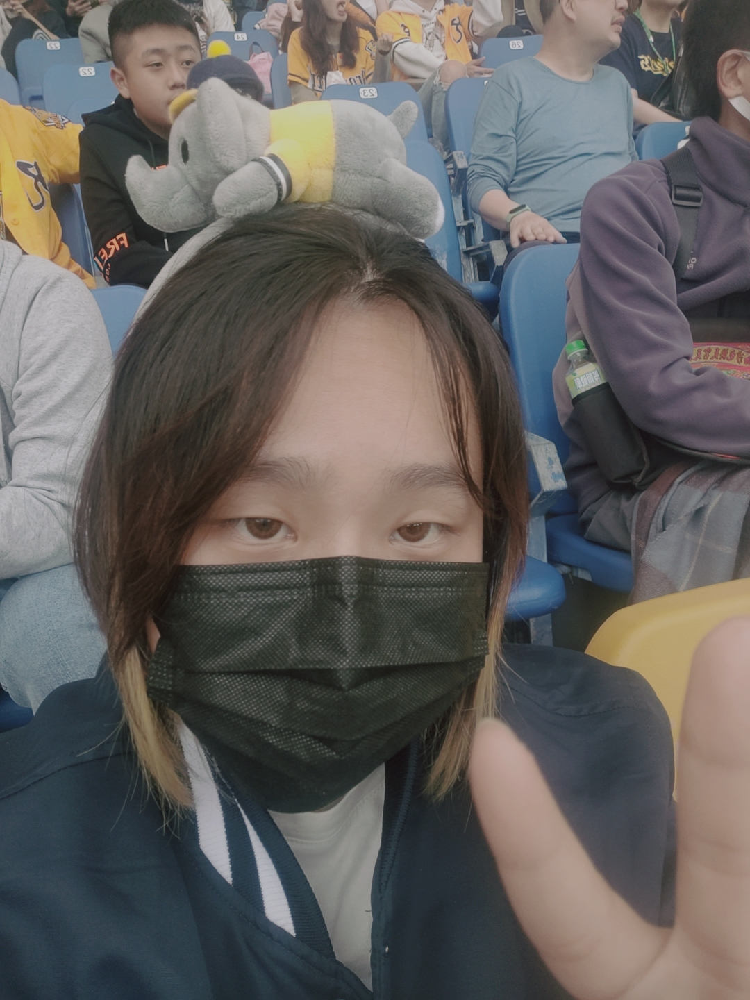

CREATOR · 01ABOUT THE ARTIST — 01
你好，
我是劉昱廷。
喜歡創作角色，也喜歡用畫面說故事。從日常靈感出發，把腦海裡的想像慢慢畫下來；這裡收藏著我的原創角色、二創插畫與動畫作品。
ILLUSTRATION · CHARACTER DESIGN · ANIMATIONORIGINAL CHARACTERS — 02
走進我的原創角色。
從角色插畫到設定圖，認識 Jamie Cole 與 Molly Turner。
每個角色，都有屬於自己的模樣與故事。
點選角色插畫，即可查看角色設計圖與設定資料。
FAN ART & STUDIES — 03
喜愛的故事，再畫一次。
點開主視覺，瀏覽所有二創插畫。
A MOMENT IN MOTION — 04
讓喜愛的故事，動起來。
點開主視覺，挑選作品試看；每張動畫封面都取自影片本身的第 1 秒。